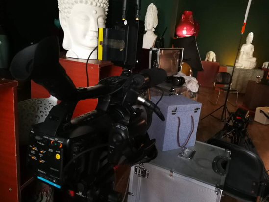
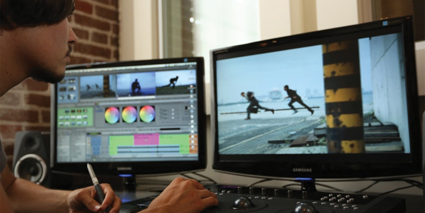

What you should know before making a corporation video
Before you start a video project, it is better to know as much as you can about the video production process as a client. Great video marketing isn't just about cameras and microphones. It also includes planning, forethought, and a kick-ass strategy.
In G’est Media, we’d always like our clients to know our steps and have a clear idea of the whole process.
Normally we have 3 phases to go through. In these three phases, there are totally 8 steps from defining the objectives of the video to sharing and promoting the video.
Phase 1: Pre-Production
The pre-production phase is to prepare for the shooting days. In this phrase, we are going to discuss with our clients about what message they want to communicate to the audience, what format is proper, what resources we need, and to work out a breakdown shooting list and shooting schedule to ensure that everything needed for shooting is covered.
Step #1: Define the video objective and audience
Defining the video objective is always the most important and most fundamental thing in the whole process, as it decides how we are going to conduct the following steps and what message we are going to convey in the video. The easiest way to define the objective is to know who your audience is. As your product or service won’t appeal to everyone, to know who your audience are and what the objective is helps us to communicate all the right message to right people without wasting money and time.
Step #2: Core Message Development
With knowing the objective and audience of the video, it is easy to develop on the core message that you want to communicate. However, you cannot simply put the message you wish to convey as the core message, because what you want to say usually are not totally overlapped with what your customers want to know. And the core message falls into the intersection between what you want to achieve and what your audience wants to know.
Step #3: Scripting and storyboarding
Based on the core message, we now have a brief concept of the video. We can move on to decide how to tell the story and in which format. For example, interview gives a more direct feeling, narrating sounds more professional, animation and visual effects are more technology-oriented. We can use one format for the whole video or combine several formats as needed. A shooting list will be created to cover all the visual messages to ensure that we won’t miss any information. We might also create a storyboard for the video, if necessary, to give our clients a more clear view of what the video will be.
Step #4: Scheduling and Planning
After we know what pictures we need, we can start scheduling the shooting days. In additional to the length of the footage, number of locations involved in the video also affects how many shooting days we need. We will create a timeline-based schedule indicates an estimate time for each scene so that we won’t be run out of time on shooting days. After we got detailed shooting schedule, we will start to collect various resources including locations, studios, castings, narrators and all other necessary resources.
Phase 2: Shooting
Step #5: Shooting the Video
On shooting days the only thing we are going to do is to shoot all the sceneries we planned. Normally we will send our crews to the location about one hour ahead of time to pre-inspect the site and set up the equipment. However, there will be some unexpected events happen. For example the weather changed, some resources were unavailable, or the client got some new ideas. We have to do fast adjustment according to changed situation in order to ensure the best quality of the video.
Phase 3: Post-Production
The footage is then taken back to the video production company. Our editors and directors will start on editing the footages based on the shooting lists and storyboard.
Step #6 Draft Cut of the Video
It usually takes 1-2 weeks to get a draft cut from us. For the draft version, we will assemble all the needed cuts for clients to review. At this point the client should provide as much feedback as possible. This is time for the client to talk about everything they want changed with the video. These suggestions will be incorporated into the second draft of the video.
Step #7 Final Cut of the Video
After 2-3 rounds of revision, we should already have a final cut of the video which includes licensed music, subtitles, animated logo, and visual effects if necessary. At this stage there should only be very minor changes that need to be made to the video. After the video is approved by the client, we will provide a full master quality version (Full HD 1920 x 1080 at high bit rate) to the client. So far, all the video production steps are finished.
Phase 4: Video Marketing
Step #8: Promotion & Distribution
While, the video is part of company’s marketing strategy. The video would be of no use if you don’t know how to promote it. This may include branding design, marketing research, social media campaign, media distribution, and SEO optimization. In G’est Media, we have professional marketing team that helps you to work out an effective marketing plan to ensure the video receives the maximum amount of exposure from its intended audience.
That's it! Congratulations for making it through the entire guide. However, this only covers part of the video production processes. In G’est Media, our production team, together with our visual design team and marketing team will make customized schedules and plans for each client based on their specific demands and target audience.
Check here to get more information on how to make your decision on your videos!